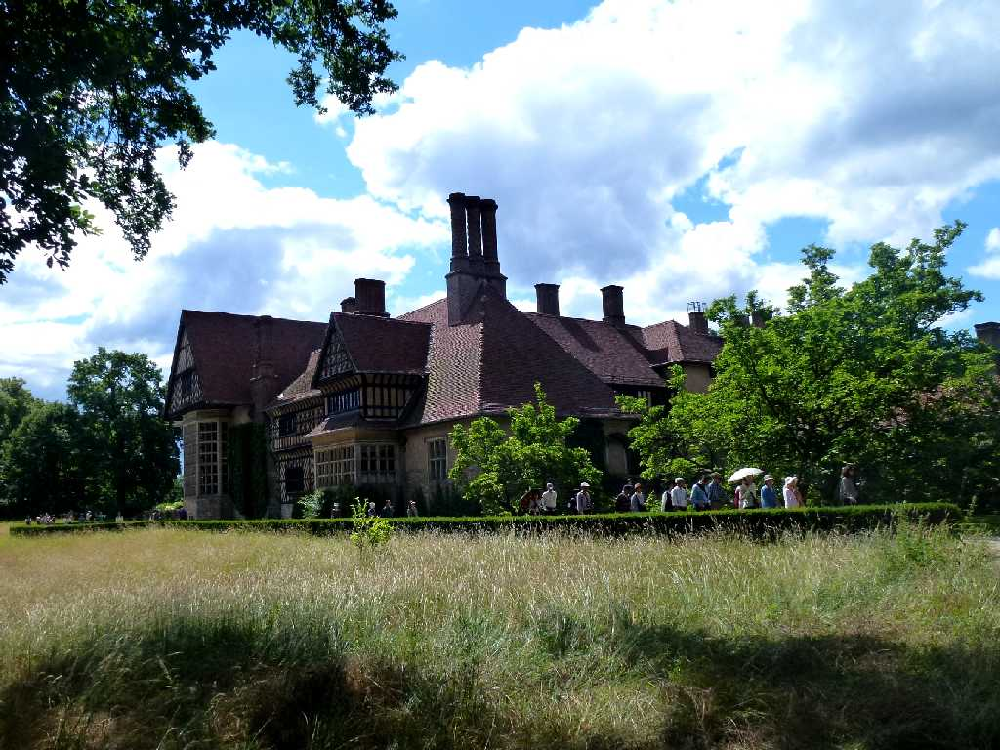
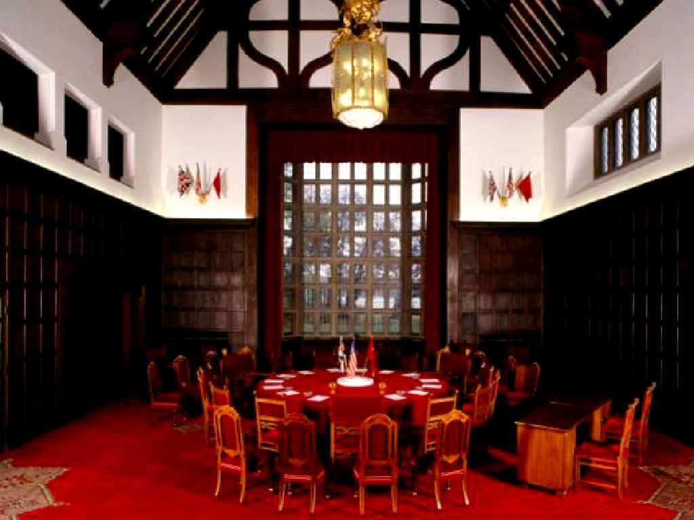
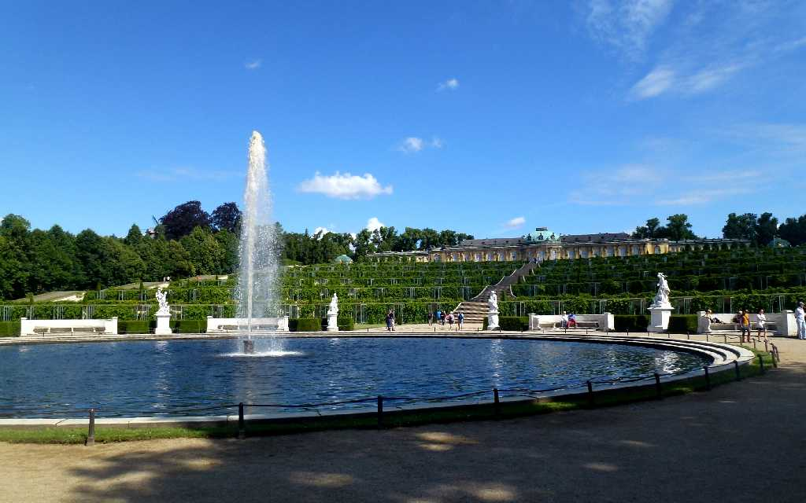
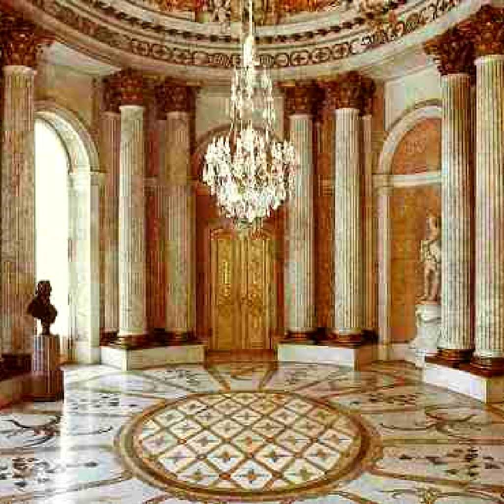
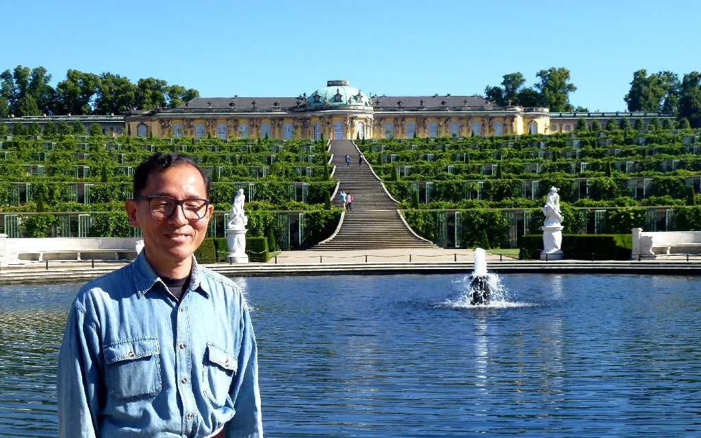

Schloss Cecilienhof Potsdam
１９１５年にプロイセン最後の王子ウィルヘルムがツェツィーリエン妃のために建てたツェツィーリエンホーフ宮殿

Schloss Cecilienhof
１９４５年７月１７日にチャーチル トルーマン スターリンがドイツと日本の戦後処理について話し合われたポツダム会談の議場が残されている

Schloss Sanssouci Potsdam
１７４５年にフリードリヒ大王の夏の離宮として創られたドイツロココ様式の最高傑作と云われるサンスーシー宮殿

Marmorsaal Schloss Sanssouci
大理石で飾られた大広間

June 15 2014 Schloss Sanssouci